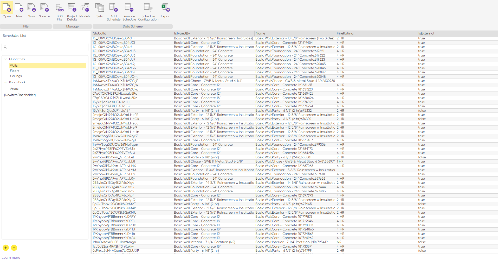

G.DataManager
1. What Is This Tool?
G.DataManager is a standalone desktop application designed to help AEC professionals manage, standardize, and automate data extraction from BIM models using reusable configuration files and scheduling templates.
At its core, G.DataManager acts as a BDS Config Manager—it enables users to create, open, edit, and export .bds.config files, which reference structured BDS templates. These templates define what data to extract from IFC-based models and how to format it, ensuring consistency across teams and projects.
Whether you're managing a single BIM model or coordinating multiple stakeholders on a large infrastructure project, G.DataManager gives you a visual and efficient way to control how building data is captured, organized, and shared.
2. What Is a BDS File?
Building Data Share (BDS) Format
Building Data Share (BDS) is an open, XML-based schema designed for defining structured, reusable data schedules in BIM workflows.
Built on the IFC (Industry Foundation Classes) standard, BDS enables cross-platform, multidisciplinary data templates that can be reused across multiple models, teams, and phases of a construction project.
Instead of manually defining what data you need from your BIM model, a BDS file allows you to:
- Specify IFC entities to include (e.g., IfcWall, IfcDoor)
- Choose which properties or attributes to extract (e.g., FireRating, Type, LoadBearing)
- Apply filters (e.g., IsExternal = true, FireRating > 2 HR)
- Define sorting rules and field visibility
This turns complex model data into clean, structured, and predictable tabular outputs ready for analysis, compliance checks, or export to Excel.
Highlights
-
Standards-Based
Built for interoperability with any software that supports IFC. -
Reusable Templates
Define once, reuse everywhere. Ensures consistency across all project stages and contributors. -
Multi-Disciplinary Coverage
Supports all disciplines including architecture, structural, mechanical, and electrical. -
Structured Output
Produces well-formed schedules with headers, metadata, and filters embedded in the definition.
G.DataManager is currently in Beta and will be available soon for free download.
For inquiries, contact: contact@g-algo.com
3. Overview

What Can You Do?
| Feature | Description |
|---|---|
| Open Config File | Load a .bds.config file to access its project metadata, models, and BDS link |
| Create New Project | Set up a new configuration with editable project fields |
| Define Schedules | Create and manage schedule templates using a visual editor |
| Export to Excel | Export any schedule into a clean .xlsx file with header styling |
| Assign IFC Models | Link one or more BIM models (IFC) to be used as data sources |
| Project Metadata | Store information like project name, address, organization, issue dates, etc. |
| Filter and Sort Data | Apply complex filters (e.g., regex, BETWEEN, IS NULL) and custom sort orders |
G.DataManager offers a user-friendly interface with categorized navigation, tree views for hierarchy management, and rich dialogs for editing configuration content.